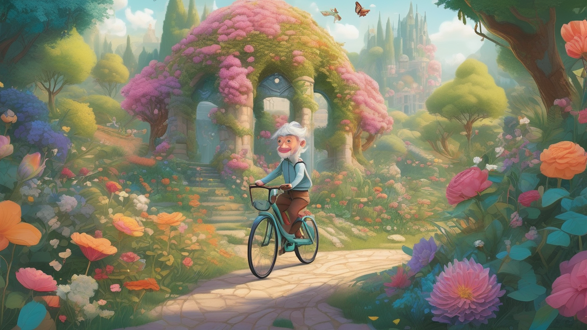

One-minute Video
AtomoVideo is a novel high-fidelity image-to-video (I2V) generation framework that generates high-fidelity video from input images, achieves better motion intensity and consistency than existing work, and is compatible with various personalized T2I models without specific tuning.
Image-to-Video Examples
|  |
Comparisons with Other Methods
| Image | AtomoVideo | Gen-2 | Pika 1.0 |
| Image | AtomoVideo | Gen-2 | Pika 1.0 |
 |
| Image | AtomoVideo | Gen-2 | Pika 1.0 |
| Image | AtomoVideo | Gen-2 | Pika 1.0 |
Abstract
Recently, video generation has achieved significant rapid development based on superior text-to-image generation techniques. In this work, we propose a high fidelity framework for image-to-video generation, named AtomoVideo. Based on multi-granularity image injection, we achieve higher fidelity of the generated video to the given image. In addition, thanks to high quality datasets and training strategies, we achieve greater motion intensity while maintaining superior temporal consistency and stability. Our architecture extends flexibly to the video frame prediction task, enabling long sequence prediction through iterative generation. Furthermore, due to the design of adapter training, our approach can be well combined with existing personalised models and controllable modules. By quantitatively and qualitatively evaluation, AtomoVideo achieves superior results compared to popular methods.
{kind=link}